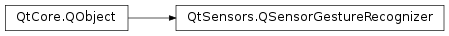

QSensorGestureRecognizer¶
Synopsis¶
Functions¶
- def
createBackend() - def
gestureSignals() - def
startBackend() - def
stopBackend()
Detailed Description¶
The
PySide2.QtSensors.QSensorGestureRecognizerclass is the base class for a sensor gesture recognizer.
QSensorGesturerecognizer developers should sub-class this to implement their own recognizer.All sensor gesture recognizers have a detected(
PySide2.QtCore.QString) signal. Implementors can use this and send recognizer specific gestures, such as detected(“shake_left”) or implement custom signals such as shakeLeft().These custom signals will be available in the
QSensorGestureobject at runtime.
-
class
PySide2.QtSensors.QSensorGestureRecognizer([parent=Q_NULLPTR])¶ Parameters: parent – PySide2.QtCore.QObjectConstructs the
PySide2.QtSensors.QSensorGestureRecognizerwithparentas parent.
-
PySide2.QtSensors.QSensorGestureRecognizer.create()¶ Called by
QSensorGestureobject constructor to create the recognizers backend.Implementors would use this to instantiate QSensors and connect signals.
-
PySide2.QtSensors.QSensorGestureRecognizer.createBackend()¶ Calls
QSensorGestureRecognizer.create()if the recognizer is valid.
-
PySide2.QtSensors.QSensorGestureRecognizer.detected(arg__1)¶ Parameters: arg__1 – unicode
-
PySide2.QtSensors.QSensorGestureRecognizer.gestureSignals()¶ Return type: list of strings Returns a list of signals that this recognizer supports.
Note that all signals declared will be exported to the
QSensorGestureobject. If you need to use signals that are not exported, you should use a private class to do so.
-
PySide2.QtSensors.QSensorGestureRecognizer.id()¶ Return type: unicode Returns the identifier for this recognizer.
-
PySide2.QtSensors.QSensorGestureRecognizer.isActive()¶ Return type: PySide2.QtCore.boolReturns true if this recognizer is active, otherwise false.
-
PySide2.QtSensors.QSensorGestureRecognizer.start()¶ Return type: PySide2.QtCore.boolCalled by
QSensorGesture.startDetection()to start this recognizer. Implementors should start the sensors. Returns true if the operation is successful.
-
PySide2.QtSensors.QSensorGestureRecognizer.startBackend()¶ Calls
QSensorGestureRecognizer.start()if the recognizer isn’t already initialized. This is called by theQSensorGestureobject, so please use that instead.See also
QSensorGesture.startDetection()
-
PySide2.QtSensors.QSensorGestureRecognizer.stop()¶ Return type: PySide2.QtCore.boolCalled by
QSensorGesture.stopDetection()to stop this recognizer. Returns true if the call succeeds, otherwise false.Implementors should stop the sensors.
-
PySide2.QtSensors.QSensorGestureRecognizer.stopBackend()¶ Calls
QSensorGestureRecognizer.stop()if no other clients are using it. This is called by theQSensorGestureobject, so please use that instead.See also
QSensorGesture.stopDetection()
© 2018 The Qt Company Ltd. Documentation contributions included herein are the copyrights of their respective owners. The documentation provided herein is licensed under the terms of the GNU Free Documentation License version 1.3 as published by the Free Software Foundation. Qt and respective logos are trademarks of The Qt Company Ltd. in Finland and/or other countries worldwide. All other trademarks are property of their respective owners.